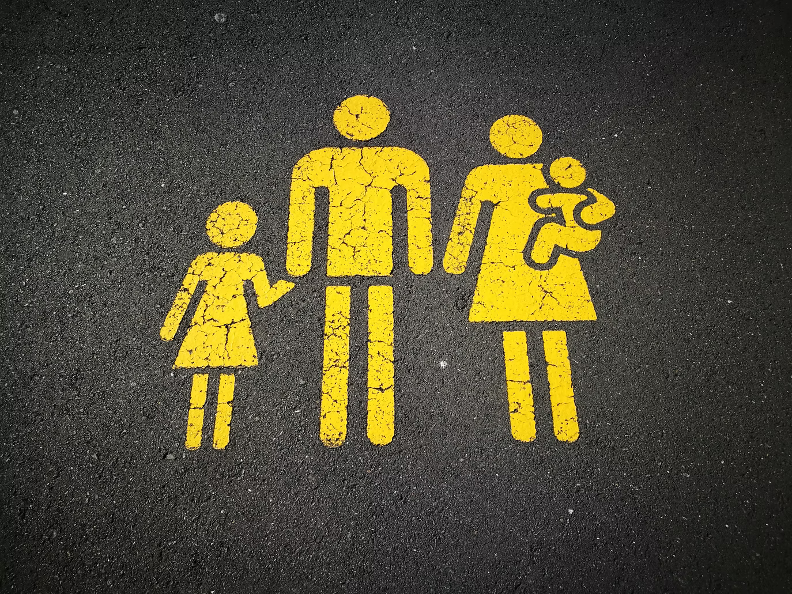

my work!
I was a good Radha
Under the guidance of my Girls Write Now mentor Yvette Clark, I crafted a piece of poetic prose about complex mother-daughter relationships and cycles of domestic abuse and gendered violence within South Asian communities. I had the opportunity to be featured in Girls Write Now Live: Unmuted—a video series showcasing mentees' work.
Biasly
I worked to develop a machine learning/NLP-based tool that could detect gender bias in literature. My goal was to help writers mitigate bias in their work and enable readers to be aware of the amount of bias they consume on a regular basis. I published an article on my work in the data science journal Towards Data Science.

@Srihitha Pallapothula 2023